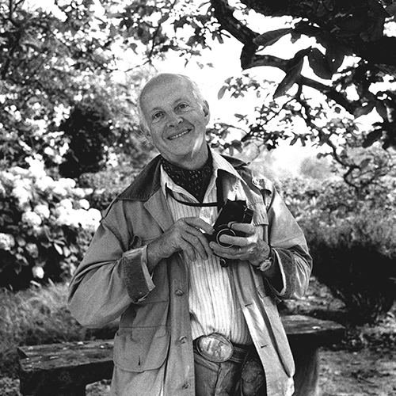

personal album for self centered photographs and ramblings by uuoonngg.
"Photography is in a way a mental process. We have to know what to, be clear, on what we want to say. Our conceptions, our, what we think of a certain situation, a certain problem. Photography is a way of writing it, of drawing, making sketches of it. And in the form, things are offered to us in daily life. We have to be alert and know when to pick the moment which is significant. Then, it’s just intuition. It’s instinct. We don’t know why, we press at a certain moment. It comes, it is there, it’s given. Take it. Everything is there, it is a question of chance, but you have to pick and force chance to come to you. There’s a certain will."
- by Henri Cartier-Bresson